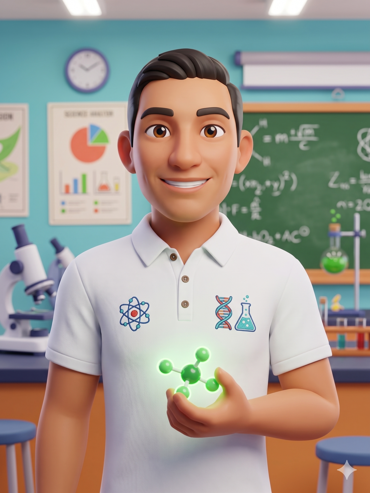

Tu laboratorio virtual de ciencias para bachillerato. Aquí encontrarás explicaciones claras, fórmulas, ejercicios resueltos, prácticas interactivas y evaluaciones de Física, Química y Biología.
Todo el contenido está diseñado para que aprendas a tu ritmo, con ejemplos del mundo real y el apoyo del asistente Prof. W con inteligencia artificial.

Docente de Ciencias Naturales — Físca, Química y Biología para bachillerato. Comprometido con una educación de calidad y accesible para todos.
Con apoyo de IAElige tu materia
Magnitudes, cinemática, dinámica y energía. Aprende el movimiento del universo con ejercicios resueltos y prácticas interactivas.
Átomos, moléculas, reacciones y estequiometría. Entiende la materia desde sus componentes más pequeños.
Células, genética, ecosistemas y evolución. Explora la increíble diversidad de la vida en la Tierra.